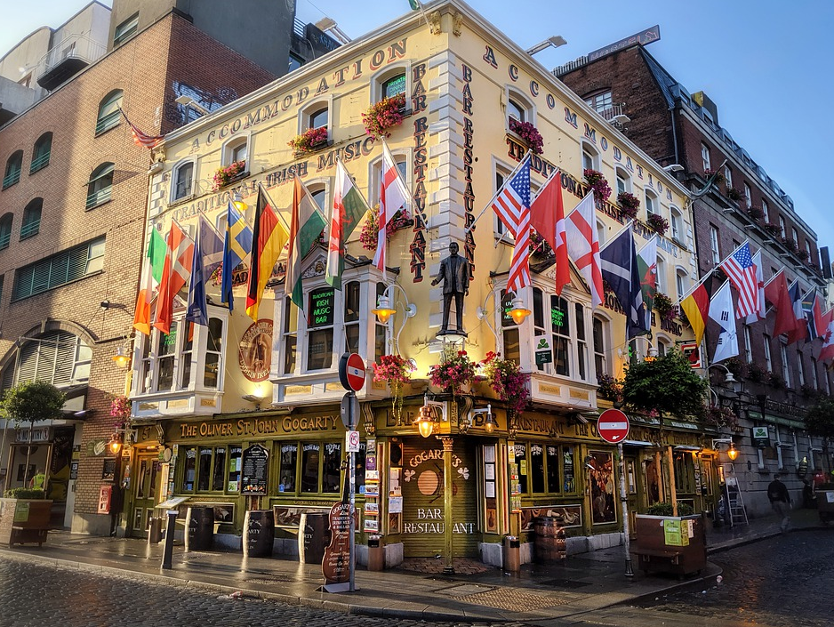
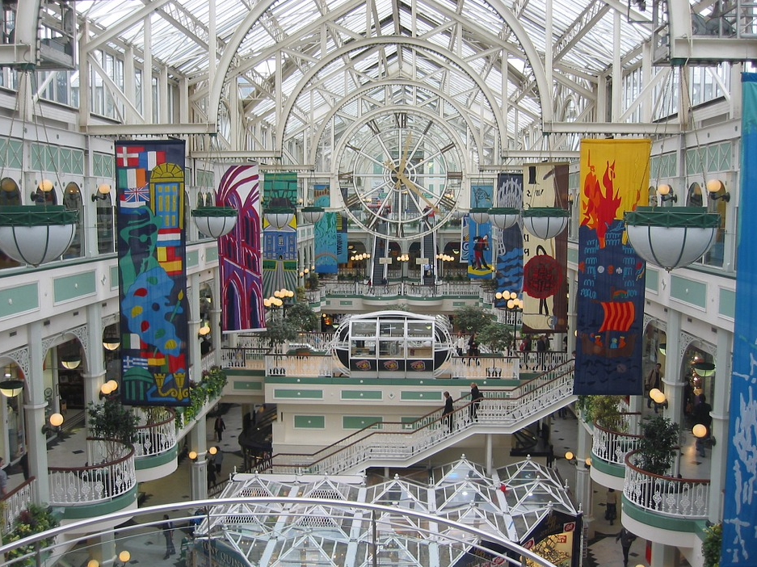

As a tourist, an excellent way to enjoy your stay is to experience what the city has to offer. Here is what Dublin has in store for you:
Busy nightlife
Dublin excels in providing an exciting nightlife, and few European cities can offer the excitement that it has. By day, you will not notice most of the establishments as they come to life at night. Get treated to pubs, cinemas, restaurants, clubs, live music venues, and traditional Irish music clubs. As such, you do not have to limit yourself to one choice. There is no 24 hour licensing but the hours that you do get to spend in these establishments will be worth every penny spent.
If you wish to know a city and its people, do it in the dark. You will notice that Dublin is quite a young town with a laid-back attitude as expressed by its inhabitants. As such, you can take it easy and enjoy each moment you get to spend in their venues. You will find that the nightlife concentrates around a given area such that you can easily walk from one establishment to another. Also, it is safe to walk around at night so let go and enjoy your tour.
The pubs
Where better to sample Guinness than from where it comes? The pubs in Dublin have something for everyone no matter the time of day, your preferences or your mood. As such, sit back and enjoy the calm atmosphere and enjoy the hospitality which is custom of these establishments. What’s more, you are always near a pub. For every one hundred meters that you cover, there is a pub. What fun!
Live music
If you tend to be the type of person who would rather hear music straight from the source, then you are in for a treat! Many upcoming bands as well as international artists regularly make a stop at Dublin and thus, you should be able to catch some live shows while in town. There are at least a dozen packed venues each night, and if you wish, you can also get to enjoy live classical Irish music. The choice is yours.
Cinema
For people looking to catch a movie while on tour, you have five modern cinemas from which to choose. They all offer one thing: charm. As such, you should have no trouble relaxing and catching up on the latest films.
Theaters
With both contemporary and classical plays showing in theaters, it is not a surprise that the theater scene in Dublin is fast thriving. It is a great way to enjoy your night as you take a more in-depth look into our society.Everything in Dublin has a relaxed feel to it and as such, be sure to dress comfortably to enjoy your night better.
Shopping
When the day comes, it is a great time to see what Dublin has to offer regarding shopping experiences. Here, you have two options. The first involves going to the north side of the city where you will find brands. The second includes going to the south side where you will get a multitude of local shops. Or even better, you could choose to get something from both sides, mix, match and enjoy the look!
Nassau Street has lots of Irish gifts including crafts, knitwear, tweeds, and other products in which you would have an interest. Grafton Street has a wide pedestrian zone which allows you to do window shopping at your convenience and when something catches your eye, you can dash in to see it. If you do get tired when shopping, you will quickly find a café from where you can relax and watch people go on about their business.
Eating Out
There are many restaurant choices in Dublin, owing to the increase of venues offering international cuisine over the years. Most of the restaurants offer Italian, French and Irish dishes among other delicious cuisines. Eating out in Dublin is pretty expensive when compared to other European cities. This cost owes to the high rents charged in the town. However, you can always opt for the traditional budget meal in this city which consists of fish, chips and a soda. Eating this will cost you ten Euros or less, and you should have enough to spend on other activities. Be sure to eat at least once in one of the fancy restaurants as the food will wow you.
There are lots of tourist attractions in Dublin, and they include the Dublin castle, the Dublin Zoo, the Guinness Storehouse, the Irish Museum as well as other amazing places which you should tour when in the city. There are also sporting activities in which you can participate. As such, be ready to have the time of your life as you open up to the relaxed atmosphere that envelops this beautiful city. If you wanna to find all of Dublin's comfortable atmosphere come to the homepage.